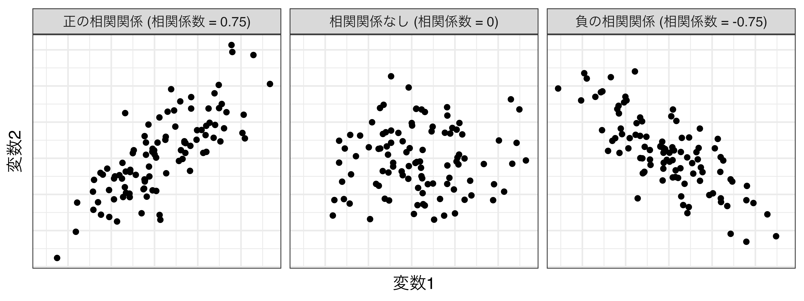
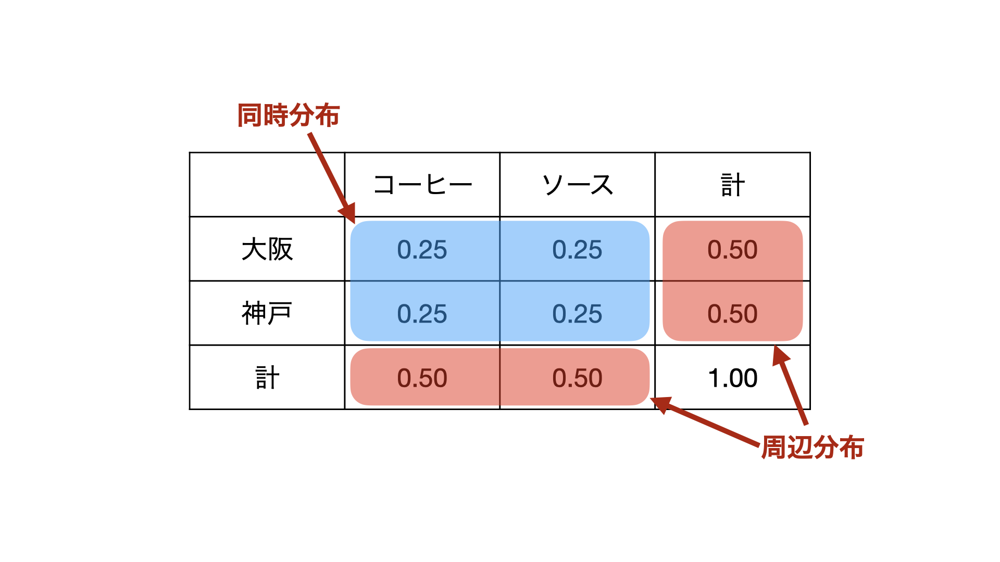
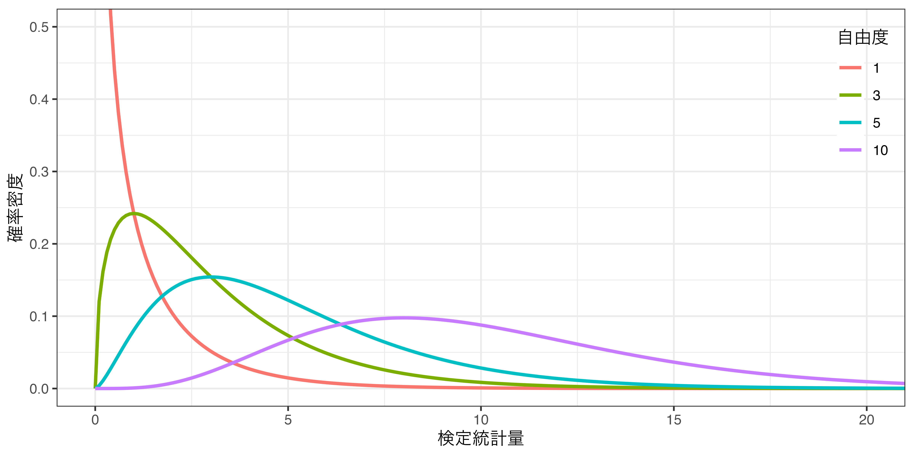
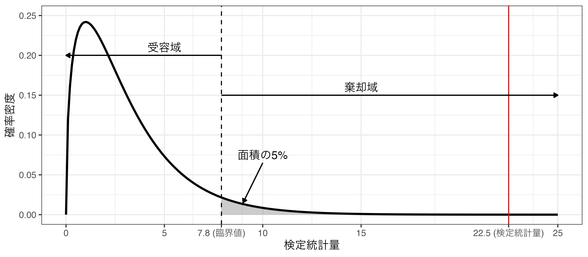

マクロ政治データ分析実習
第7回 変数間の関係
授業開始前に
すぐに実習できるように準備しておきましょう。
- JDCat分析ツールを起動しておいてください。
- 本日授業用のプロジェクトを作成してください。
- LMSから実習用データ（3つ）をダウンロードしておいてください。
- ダウンロードしてデータをプロジェクト・フォルダーにアップロードしてください。
- プロジェクト・フォルダー内に
Dataフォルダーを作成し、そこにアップロードしましょう。
- プロジェクト・フォルダー内に
- 実習用コードを入力するスクリプト、またはQuartoを開き、以下のコードを入力&実行してください。
- トラブルが生じた場合、速やかにTAを読んでください。
- 時間に余裕があれば、スライド内のコードも書いておきましょう。
\(t\)検定: 平均値の差の検定
データの読み込み
library(tidyverse)
# 作業フォルダーの下のDataフォルダー内になるGacha2.csvを読み込み、gacha_dfという名で格納
# 今回のデータは先週と同じであるが、result変数のダミー化済み
gacha_df <- read_csv("Data/Gacha2.csv")
gacha_df # gacha_dfの出力# A tibble: 4,772 × 8
player trial stone_type result result_N result_R result_SR result_SSR
<dbl> <dbl> <chr> <chr> <dbl> <dbl> <dbl> <dbl>
1 1 1 Paid R 0 1 0 0
2 1 2 Paid R 0 1 0 0
3 1 3 Paid SR 0 0 1 0
4 1 4 Free R 0 1 0 0
5 1 5 Paid N 1 0 0 0
6 1 6 Free N 1 0 0 0
7 1 7 Free SSR 0 0 0 1
8 1 8 Free N 1 0 0 0
9 1 9 Free N 1 0 0 0
10 1 10 Free N 1 0 0 0
# ℹ 4,762 more rows問題設定
あるソシャゲのガチャ確率を見ると、SSR（★5）の出現確率は5%と記載されている。しかし、ガチャでSSRが出現する確率が有償石か無料石かによって変わる噂を聞いた。これが本当なら大炎上するだろう。この噂は本当だろうか。
- 帰無仮説（\(H_0\)）：無償石のSSRの確率と有償石のSSRの確率の差は0である。
- 2つの確率が同じなら、その差分は0であるため
- 対立仮説（\(H_a\)）：無償石のSSRの確率と有償石のSSRの確率の差は0ではない。
- 2つの考え方があり得る（本質的には同じ）
- 無償石のガチャと有償石のガチャを別途の標本として考える。
- 名目変数（石の種類）と連続変数（SSRの出現割合）間の関係
注意: 変数が0または1の値のみを取る場合、これから紹介する「\(t\)検定」でなく、「母比率の差の検定」を使うのが適切であるが、ここではより汎用性の高い\(t\)検定の例で紹介する。
点推定値
- 約-1.5%ポイントの差が存在
- 無料石の場合の
result_SSRの平均値（\(\bar{x}_{\mbox{free}}\)）は0.0425（4.25%） - 有償石の場合の
result_SSRの平均値（\(\bar{x}_{\mbox{paid}}\)）は0.0572（5.72%）
- 無料石の場合の
- 無料石でガチャを引くと有償石で引いた場合より、SSRが出現する確率が約1.5%ポイント低い \(\Rightarrow\) 点推定値
- これは統計的に有意な差か
平均値の差の検定の考え方
- 標本平均（\(\bar{x}_{\mbox{free}}\)と\(\bar{x}_{\mbox{paid}}\)）は正規分布に従う（= 中心極限定理）
- 正規分布を従う2つの値の差分（\(\delta = \bar{x}_{\mbox{free}} - \bar{x}_{\mbox{paid}}\)）も正規分布に従う
- 帰無仮説（\(H_0\)）は\(\delta = 0\)
- \(\delta\)は正規分布に従うため、 \(\frac{\delta - \delta_0}{\mbox{SE}_\delta}\)は\(t\)分布に従う
- 帰無仮説上の\(\delta\)（=\(\delta_0\)）は0であるため、\(\delta_0 = 0\)
- \(\mbox{SE}_{\delta}\)と検定に使用する\(t\)分布の自由度の計算はやや複雑
- パソコンに任せる
- 後は先週の内容と同じ手順
t.test()関数を使えば簡単
t.test()関数の使用
- 第1引数は「
平均値を計算する変数名 ~ グループ変数名」(今回はresult_SSR ~ stone_type) - 第2引数は「
data = データ名」(今回はdata = gacha_df)
Welch Two Sample t-test
data: result_SSR by stone_type
t = -2.1653, df = 2960.6, p-value = 0.03045
alternative hypothesis: true difference in means between group Free and group Paid is not equal to 0
95 percent confidence interval:
-0.027932426 -0.001384442
sample estimates:
mean in group Free mean in group Paid
0.04251918 0.05717762 結果の解釈
- 点推定値：\(\hat{\delta} = \bar{x}_{\mbox{free}} - \bar{x}_{\mbox{paid}} \simeq -0.15\)（約-1.5%ポイント）
帰無仮説の棄却有無を確認する3つの方法
- 有意水準（\(\alpha\)）は0.05と設定
- 検定統計量：約-2.165 / 棄却域：(\(-\infty\), \(-1.961\)]と[\(1.961\), \(\infty\))
- 検定統計量は棄却域に含まれる \(\rightarrow\) 帰無仮説を棄却
- 点推定値の95%信頼区間: [-0.028, -0.001] (-2.8%ポイント〜-0.1%ポイント)
- 95%信頼区間に帰無仮説の値 (0)が含まれていない \(\rightarrow\) 帰無仮説を棄却
- \(p\)値：0.030
- \(p < \alpha\) \(\rightarrow\)帰無仮説を棄却
- 検定統計量：約-2.165 / 棄却域：(\(-\infty\), \(-1.961\)]と[\(1.961\), \(\infty\))
結論
- 「無償石のSSRの確率と有償石のSSRの確率の差はない」という帰無仮説を棄却する。したがって、有意水準5%で無償石のSSRの確率と有償石のSSRの確率には差がある。
参考）母比率の差の検定：prop.test()の使用
x: SSRの出現枚数（無償石ガチャで133枚、有償石ガチャで94枚）n: 試行回数（無償石ガチャ3128回、有償石ガチャ1644回）
2-sample test for equality of proportions with continuity correction
data: c(133, 94) out of c(3128, 1644)
X-squared = 4.7923, df = 1, p-value = 0.02859
alternative hypothesis: two.sided
95 percent confidence interval:
-0.0283874901 -0.0009293778
sample estimates:
prop 1 prop 2
0.04251918 0.05717762 相関分析: 連続変数間の関係
問題設定
政治家・政党にとって「投票率の高い地域」は「票になる地域」であるため、補助金などで優遇されているかも知れない。一方、投票率の低い地域は票にならないため、政治家・政党にとって、関心が払われていない可能性もある。これは本当だろうか。仮説検定の際、\(\alpha = 0.05\)を用いる。
2つの連続変数間の関係: 「投票率」と「補助金額」
# A tibble: 47 × 4
ID Pref Turnout Subsidy
<dbl> <chr> <dbl> <dbl>
1 1 北海道 60.3 134.
2 2 青森県 54.2 193.
3 3 岩手県 59.1 265.
4 4 宮城県 52.8 98.2
5 5 秋田県 60.6 219.
6 6 山形県 64.1 187.
7 7 福島県 56.7 166.
8 8 茨城県 51.5 76.3
9 9 栃木県 51.7 72.8
10 10 群馬県 52.0 76.6
# ℹ 37 more rows| 変数 | 説明 |
|---|---|
ID |
都道府県ID |
Pref |
都道府県名 |
Turnout |
投票率 (%) |
Subsidy |
人口1万人当たり地方交付税額 (万円) |
注意： 変数が「順序変数」の場合もこれから紹介する方法で相関係数の計算ができるものの、基本的には「ノンパラメトリック相関係数」が推奨される。詳細はGoogleなどで調べてみること
正の相関、負の相関、無相関
- 正の相関：変数1が大きくなれば、変数2も大きくなる
- 負の相関：変数1が大きくなれば、変数2は小さくなる
- 無相関：変数1が大きくなっても、変数2は変わらない

相関係数
相関係数（\(\rho\)）: 2つの変数間の相関関係の強さを表す指標
- 相関係数は-1以上1以下（\(-1 \leq \rho \leq 1\)）
- -1: 完全な負の相関 / 0: 無相関 / 1: 完全な正の相関
- 母集団における相関係数は\(\rho\)（ロー）、標本における相関係数は\(r\)と表記するのが一般的
- 「相関関係の強さ」とは?
- 2つの変数間の関係を直線で表した場合、点が直線から近いか、離れているか。
相関関係の強さ
変数1（\(x\)）と変数2（\(y\)）の関係（青い線）はいずれも\(y = 1.5 \times x\)の直線（若干のズレはある）
- 青の直線 = 回帰直線（次回にて解説）

散布図の確認
相関係数の求め方
変数1（\(x\)）と変数2（\(y\)）の相関係数
\[ \begin{align} r_{x, y} = \frac{\mbox{Cov}_{x, y}}{s_x \cdot s_y} \end{align} \]
- \(\mbox{Cov}_{x, y}\) : 変数 \(x\) と \(y\) の共分散（
cov()）- 共分散の求め方、意味は適宜Google検索
- \(s_x\): 変数\(x\)の不偏分散の平方根（
sd()） - \(s_y\): 変数\(y\)の不偏分散の平方根（
sd()）
相関係数の仮説検定
- 帰無仮説（\(H_0\)）: 都道府県の投票率と補助金額には相関関係がない（\(\rho = 0\)） 。
- 対立仮説（\(H_a\)）: 都道府県の投票率と補助金額には相関関係がある（\(\rho \neq 0\)）。
\[ t = \frac{r_{x, y}}{\sqrt{1 - r_{x, y}}} \sqrt{n - 2} \]
\(t\)は自由度\(n-2\)の\(t\)分布に従うため、統計的仮説検定が可能（前回参照）
cor.test()の使用
第一引数として変数1のベクトル、第二引数として変数2のベクトルを指定（順番は逆でも可）
- 順序変数の相関係数を計算する際は、第3引数として
method = "kendall"（Kendallの順位相関係数\(\tau\)）、またはmethod = "spearman"（Spearmanの順位相関係数\(\rho\)）を指定することを推奨- デフォルトは連続変数の相関係数であるPearsonの積率相関係数（
method = "pearson"）
- デフォルトは連続変数の相関係数であるPearsonの積率相関係数（
Pearson's product-moment correlation
data: subsidy_df$Turnout and subsidy_df$Subsidy
t = 2.9128, df = 45, p-value = 0.005558
alternative hypothesis: true correlation is not equal to 0
95 percent confidence interval:
0.1254750 0.6151042
sample estimates:
cor
0.3982905 結果の解釈
相関係数の\(p\)値は約0.006であり、予め決めておいた\(\alpha\)（= 0.05）より小さい（\(p < \alpha\)）。
- 帰無仮説は棄却され、対立仮説が支持される。
- 解釈1) 都道府県の投票率と補助金額の間には相関関係がある。
- これだけだと、ちょっと物足りない。
- 解釈2) 都道府県の投票率と補助金額の間には正の相関関係がある。つまり、投票率が高い都道府県は、政府からもらう補助金額も高い傾向がある。
- 注意: 相関関係 \(\neq\) 因果関係
- 都道府県の投票率が高くなると、政府からもらう補助金額も増える \(\leftarrow\) 間違った解釈!!
- 相関関係は因果関係の十分条件ではない（というか、必要条件ですらない）。
もし、 \(p \geq \alpha\) なら…
- 都道府県の投票率と補助金額の間には相関関係があるとは言えない。
参考）相関係数の大きさの解釈
Hinkle, Dennis E., William Wiersma, and Stephen G. Jurs. 2003. Applied Statistics for the Behavioral Sciences. 5th ed., Houghton Mifflin.
- ただし、社会科学の場合、相関係数が0.3、-0.3程度であってもそこそこの強さと判断したりもする。
- \(\Rightarrow\) 絶対的な基準はない
| 相関係数 | 説明 |
|---|---|
| \(0.9 < r \leq 1.0\) | とても強い正の相関関係 |
| \(0.7 < r \leq 0.9\) | 強い正の相関関係 |
| \(0.5 < r \leq 0.7\) | 中程度の正の相関関係 |
| \(0.3 < r \leq 0.5\) | 弱い正の相関関係 |
| \(0.0 \leq r \leq 0.3\) | わずかな正の相関関係 |
| \(-0.3 \leq r \leq 0.0\) | わずかな負の相関関係 |
| \(-0.5 \leq r < -0.3\) | 弱い負の相関関係 |
| \(-0.7 \leq r < -0.5\) | 中程度の負の相関関係 |
| \(-0.9 \leq r < -0.7\) | 強い負の相関関係 |
| \(-1.0 \leq r < -0.9\) | とても強い負の相関関係 |
\(\chi^2\)検定: 独立性の検定
問題設定
ミートソース、ナポリタン、ペペロンチーノ、カルボナーラ、…。みんなが大好きなパスタだが、性別によって好きなパスタは異なるだろうか。これが分かれば気になる彼（彼女）とのデートに参考にしたい。あるいは、性別よりも年齢によって好きなパスタが異なるかも知れない。実際はどうだろう。仮説検定の際、 \(\alpha = 0.05\) を用いる。
2つのカテゴリー変数間の関係: 「性別」と「好きなパスタ」/「40歳以上か否か」と「好きなパスタ」
# A tibble: 1,135 × 4
ID Female Over40 Pasta
<dbl> <dbl> <dbl> <chr>
1 1 0 0 Naporitan
2 2 1 0 Naporitan
3 3 0 0 Naporitan
4 4 0 0 Carbonara
5 5 0 0 Naporitan
6 6 0 1 MeatSauce
7 7 0 1 Peperoncino
8 8 0 1 MeatSauce
9 9 1 0 Carbonara
10 10 0 0 Carbonara
# ℹ 1,125 more rows| 変数 | 説明 |
|---|---|
ID |
回答者番号 |
Female |
女性なら1、男性なら0 |
Over40 |
40歳以上なら1、未満なら0 |
Pasta |
好きなパスタ |
クロス表を確認する
table()関数を使用（2つのベクトルオブジェクト名を指定）
性別と好きなパスタの関係
どのような場合、「性別（or 年齢）と好きなパスタには何らかの関係がある」と言えるだろうか。
カテゴリー変数間の「独立」と「連関」
「独立 (independent)」と「連関 (association)」の例
出身地と好きな飲物が「独立」している例
- 度数で表した場合
| 出身 | コーヒー | ソース | 計 |
|---|---|---|---|
| 大阪 | 10 | 10 | 20 |
| 神戸 | 10 | 10 | 20 |
| 計 | 20 | 20 | 40 |
- 割合で表した場合
| 出身 | コーヒー | ソース | 計 |
|---|---|---|---|
| 大阪 | 0.25 | 0.25 | 0.5 |
| 神戸 | 0.25 | 0.25 | 0.5 |
| 計 | 0.50 | 0.50 | 1.0 |
出身地と好きな飲物が「連関」している例
- 度数で表した場合
| 出身 | コーヒー | ソース | 計 |
|---|---|---|---|
| 大阪 | 0 | 20 | 20 |
| 神戸 | 20 | 0 | 20 |
| 計 | 20 | 20 | 40 |
- 割合で表した場合
| 出身 | コーヒー | ソース | 計 |
|---|---|---|---|
| 大阪 | 0.0 | 0.5 | 0.5 |
| 神戸 | 0.5 | 0.0 | 0.5 |
| 計 | 0.5 | 0.5 | 1.0 |
- 独立: 同時分布が周辺分布の積と一致する場合
- 連関: 独立ではない場合
同時分布と周辺分布

クロス表における「独立」の意味
同時分布が周辺分布の積と一致すること
- 前の表 (出身地と好きな飲物)の場合、どれも周辺分布は同じ
- 左側表の場合、同時分布が周辺分布の積と一致
- 右側表の場合、同時分布が周辺分布の積と不一致
- 期待割合: 周辺分布の積
- 独立であれば、このセルの値（割合）は0.XXだろう。
- 期待度数: 標本サイズに期待割合をかけたもの
- 独立であれば、このセルの値（度数）はZZだろう。
注意： 期待度数が5未満のセルが存在する場合、これから紹介する\(\chi^2\)検定より、Fisher’s exact test（フィッシャーの正確検定）の方が望ましいと知られている。詳細は教科書p.184を参照すること。
期待度数の計算
- Step 1: 度数のクロス表を作成する
| 年齢 | カルボナーラ | ミートソース | ナポリタン | ペペロンチーノ | 計 |
|---|---|---|---|---|---|
| 40歳未満 | 138 | 177 | 160 | 65 | 540 |
| 40歳以上 | 140 | 184 | 138 | 133 | 595 |
| 計 | 278 | 361 | 298 | 198 | 1135 |
- Step 2: 割合に変換
| 年齢 | カルボナーラ | ミートソース | ナポリタン | ペペロンチーノ | 計 |
|---|---|---|---|---|---|
| 40歳未満 | 0.122 | 0.156 | 0.141 | 0.057 | 0.476 |
| 40歳以上 | 0.123 | 0.162 | 0.122 | 0.117 | 0.524 |
| 計 | 0.245 | 0.318 | 0.263 | 0.174 | 1.000 |
- Step 3: 同時分布を周辺分布の積に置換 \(\rightarrow\) 期待割合
| 年齢 | カルボナーラ | ミートソース | ナポリタン | ペペロンチーノ | 計 |
|---|---|---|---|---|---|
| 40歳未満 | 0.117 | 0.151 | 0.125 | 0.083 | 0.476 |
| 40歳以上 | 0.128 | 0.167 | 0.138 | 0.091 | 0.524 |
| 計 | 0.245 | 0.318 | 0.263 | 0.174 | 1.000 |
- Step 4: 上の表に標本サイズ（1135）をかける \(\rightarrow\) 期待度数
| 年齢 | カルボナーラ | ミートソース | ナポリタン | ペペロンチーノ | 計 |
|---|---|---|---|---|---|
| 40歳未満 | 133 | 171 | 142 | 94 | 540 |
| 40歳以上 | 145 | 190 | 157 | 103 | 595 |
| 計 | 278 | 361 | 299 | 197 | 1,135 |
期待度数からのズレを計算
Step 1: クロス表の値から期待度数の値を引く（周辺分布のセルは不要）。
| 年齢 | カルボナーラ | ミートソース | ナポリタン | ペペロンチーノ |
|---|---|---|---|---|
| 40歳未満 | 138 - 133 = 5 | 177 - 171 = 6 | 160 - 142 = 18 | 65 - 94 = -29 |
| 40歳以上 | 140 - 145 = -5 | 184 - 190 = -6 | 138 - 157 = -19 | 133 - 103 = 30 |
Step 2: ズレを2乗し、期待度数で割る。
| 年齢 | カルボナーラ | ミートソース | ナポリタン | ペペロンチーノ |
|---|---|---|---|---|
| 40歳未満 | 52 / 133 = 0.19 |
62 / 171 = 0.21 |
182 / 142 = 2.28 |
-292 / 94 = 8.95 |
| 40歳以上 | -52 / 145 = 0.17 |
-62 / 190 = 0.19 |
-192 / 157 = 2.30 |
302 / 103 = 8.74 |
Step 3: セルの値の合計を計算する
- 0.19 + 0.17 + 0.21 + 0.19 + 2.28 + 2.30 + 8.95 + 8.74 \(\simeq\) 23.03 \(\leftarrow\) \(\chi^2\) 統計量（検定統計量）
- 小数点を丸めず、厳密に計算すると約22.51549
\(\chi^2\)統計量
各セルの期待度数からのズレを二乗し、期待度数で割った値の和 \(\rightarrow\) \(\chi^2\)統計量
- 「カイ二乗」、「カイ自乗」、「カイ・スクェアード（chi squared）」と読む
- \(\chi^2\)統計量は\(\chi^2\)分布と呼ばれる確率分布に従う
- 与えられた表（\(i\)行 \(\times\) \(j\)列）と、周辺分布、標本サイズ（\(n\)）におけるあらゆる可能性から計算された \(\chi^2\) 統計量でヒストグラムを描くと自由度\((i-1)(j-1)\)の\(\chi^2\)分布の形をする。
\(\chi^2\)分布の特徴
- 下限が0、上限が\(\infty\)の非対称の分布
- \(\chi^2\)は常に0以上であるため、対立仮説は\(\chi^2 \neq 0\)でなく、\(\chi^2 > 0\)
- 自由度によって分布の形が変わる
- 独立性の検定における\(\chi^2\)分布の自由度:（行数 - 1）\(\times\)（列数 - 1）
- 2行4列表の場合、\((2 - 1) \times (4 - 1) = 1 \times 3 = 3\)
- 2つの変数が独立の場合、\(\chi^2 = 0\)であり、\(\chi^2\)が大きいほど2つの変数は連関する。
- \(\chi^2\)がいくつ以上なら、独立でないと言えるか \(\rightarrow\) 臨界値
\(\chi^2\)分布の例

\(\chi^2\)分布の臨界値 (自由度3, \(\alpha = 0.05\))
臨界値はqchisq()で計算可能

chisq.test()関数の使用
性別と好きなパスタの関係
年齢と好きなパスタの関係
Pearson's Chi-squared test
data: table(pasta_df$Over40, pasta_df$Pasta)
X-squared = 22.515, df = 3, p-value = 5.095e-05[1] 5.095027e-05- 5.095e-05は「\(5.095 \times 10^{-5}\)」の意味
- = 0.00005095
結果の解釈
性別と好きなパスタの関係
- \(H_0\)：性別と好きなパスタの間には関係がない（\(\chi^2 = 0\)）。
- \(H_a\)：性別と好きなパスタの間には関係がある（\(\chi^2 > 0\)）。
- 結果：\(p \geq \alpha\)により、帰無仮説は受容される。
- 性別と好きなパスタの間には関係があるとは言えない。
- 性別と好きなパスタの間に違いがあるとは言えない。
年齢と好きなパスタの関係
- \(H_0\)：年齢と好きなパスタの間には関係がない（\(\chi^2 = 0\)）。
- \(H_a\)：年齢と好きなパスタの間には関係がある（\(\chi^2 > 0\)）。
- 結果：\(p < \alpha\)により、帰無仮説は棄却される。
- 年齢と好きなパスタの間には有意水準5%で（何らかの）関係がある。
- 年齢と好きなパスタの間には有意水準5%で（何らかの）違いがある。
解釈の際の注意点
独立性の検定は2つのカテゴリ変数が「独立」しているか、「連関」しているかを検定するものであり、変数間の具体的な関係を示すものではない。
- 性別とパスタの例
- 帰無仮説が棄却されなかったため、「性別と好きなパスタは連関しているとは言えない」、または「性別と好きなパスタの間には何らかの関係があるとは言えない」
- 「性別と好きなパスタは関係がない」 \(\leftarrow\) 間違い!
- 年齢とパスタの例
- 帰無仮説が棄却されたため、「年齢と好きなパスタは連関している」、または「年齢と好きなパスタの間には何らかの関係がある」
- その「何らかの関係」とは? \(\leftarrow\) 分析する側の解釈が必要
- ズレが大きいセルに注目（たとえば、ペペロンチーノとナポリタン）
- 例) 若年層（40歳未満）の方が高年層（40歳以上）に比べペペロンチーノを好み、高年層は若年層にくらべナポリタンを好む。一方、ミートソースとカルボナーラの場合、年齢と好みの違いは見られない。